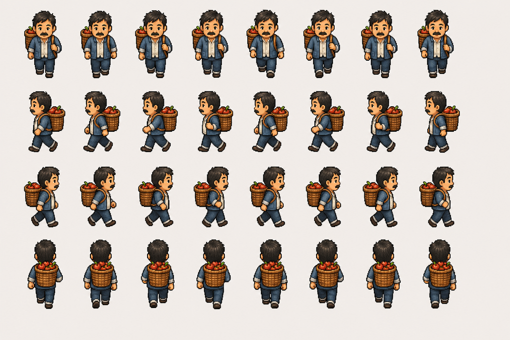
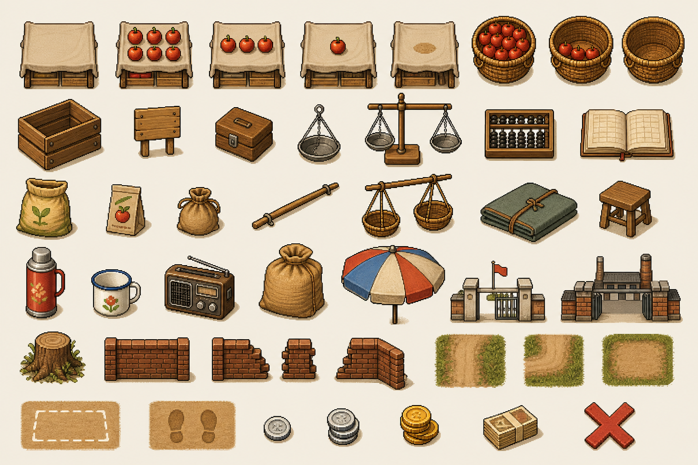
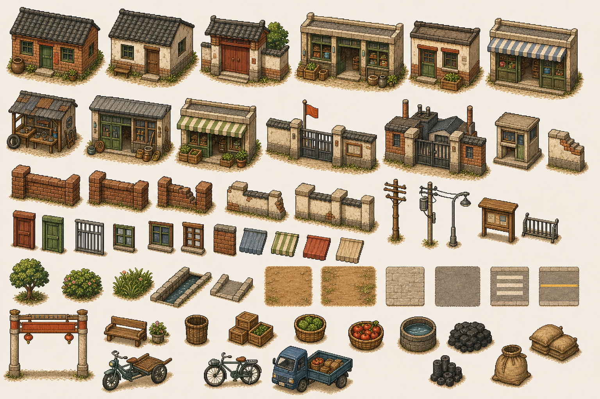

第一版原型方案：苹果种植到摆摊再生产闭环
10-15 分钟可试玩 demo：从家里种苹果，到镇街摆摊售卖，再买种子回家再种。
一、体验目标
- 完整小循环：第一版包含种植、收获、出门、摆摊、定价、成交、回家买种子、再种。
- 售卖仍是主戏：种植系统保持极简，只服务于“这些苹果是我自己弄来的，然后卖出去了”。
- 玩家能做判断：玩家需要判断去学校门口还是厂门口、卖多少钱、等多久、是否收摊换点。
- 时间决定人流：收获后进入镇街才开始营业时间，学校放学和工厂下班会改变顾客出现速度。
- 成交反馈要重：每卖出一个苹果，都要看见库存减少、现金增加、顾客有反应，并听到清楚音效。
- 轻压力无失败：有等待、人流、拒买和定价压力，但第一版不设置失败结局。
第一版的完成条件是赚到至少 2 元买种子，并成功再种一次。卖完 5 个苹果是优秀表现，不是硬性完成条件。
二、核心流程
1. 家里播种玩家在家/农田场景选择固定地块，消耗苹果种子开始种植。
2. 等待成熟地块经过短时间成长，出现清楚的阶段变化，最终可收获。
3. 收获苹果收获后获得 5 个苹果，进入背包库存。
4. 前往镇街从家门口或道路边界切换到镇街场景，营业时间开始流动。
5. 判断人流查看当前时间阶段，选择学校门口或厂门口。
6. 选点摆摊在摊位点交互，铺出布摊或竹筐，把苹果上架。
7. 自己定价玩家设置 1-5 元的苹果单价，然后开始营业。
8. 顾客判断顾客经过、停下、询价，并根据地点、类型和价格购买或拒绝。
9. 回家再种赚到种子钱后回家买种子并再种，弹出原型完成结算。
三、系统设计
场景结构
- 家/农田场景：包含主角出生点、1 块固定地、种子购买点、通往镇街的路口。后续可扩到 3 块地。
- 镇街场景：是一条短街，包含学校门口和厂门口两个可摆摊点、NPC 行走路线、人流经过区域、返回家的路口。
- 场景切换：通过路口或边界交互切换，不做大地图，不做随机地点。
核心状态
| GameState | 记录现金、时间段、当前场景、原型进度和完成状态。 |
|---|---|
| Inventory | 记录背包物品，第一版至少支持苹果和苹果种子。 |
| FarmPlot | 包含空地、已播种、成长中、可收获四种状态。 |
| TimeWindow | 记录当前营业阶段：上午、放学、下班，以及日终结算状态。 |
| Stall | 记录是否开摊、上架苹果数量、当前单价和收摊状态。 |
| Customer | 管理路过、被吸引、询价、购买/拒绝、离开的行为状态，并根据顾客阈值判断是否购买。 |
操作方式
- 方向键或 WASD 移动。
E与地块、路口、摊位点、顾客、种子购买点交互。- 摆摊后打开简单价格面板，玩家在 1-5 元范围内调整单价并确认开卖。
- 上货第一版采用一键上架，把背包里的苹果放到摊位，最多 5 个。
- 收摊时未卖出的苹果回到背包。
- 玩家可在营业时间内收摊换点，时间继续流逝。
四、时间与地点
时间系统只服务人流窗口，不做完整日历。播种、等待成熟和第一次收获属于准备阶段，不计入营业时间。 玩家带着苹果进入镇街后，HUD 开始显示当前营业阶段和下一阶段。
| 阶段 | 持续时间 | 人流规则 |
|---|---|---|
| 上午 | 2 分钟 | 学校门口和厂门口都是低人流，适合试价或换点。 |
| 放学 | 3 分钟 | 学校门口高人流，学生顾客出现快，适合低价快卖。 |
| 下班 | 3 分钟 | 厂门口高人流，工人顾客出现快，适合高价慢卖。 |
| 日终 | 即时结算 | 强制收摊，显示收入、剩余苹果、拒绝数、使用地点和完成状态。 |
- 学校门口：学生多，预算低，顾客来得快，推荐价格 2 元。
- 厂门口：工人多，预算高，顾客来得慢，推荐价格 4 元。
- 日终未完成：不判失败，展示复盘建议，允许进入下一天继续补卖。
五、顾客与定价
第一版采用阈值型顾客，而不是复杂概率公式。目标是让玩家能通过地点、价格、气泡和反应理解顾客为什么买或不买。
学生顾客
主要出现在学校门口，放学阶段出现最快。预算低，对价格敏感。
气泡：便宜点就买 1-2 元会买 3 元犹豫 4-5 元拒绝工人顾客
主要出现在厂门口，下班阶段出现最快。预算更高，但来得慢。
气泡：来一个尝尝 1-4 元会买 5 元犹豫| 种子价格 | 2 元 / 颗。 |
|---|---|
| 收获数量 | 每次成熟后收获 5 个苹果。 |
| 苹果价格 | 玩家可设置 1-5 元 / 个。学校推荐 2 元，厂门口推荐 4 元。 |
| 购买数量 | 每位顾客第一版最多买 1 个。 |
| 顾客节奏 | 非高峰每 18-25 秒出现 1 位；对应高峰每 6-10 秒出现 1 位。 |
| 完成条件 | 赚到至少 2 元，购买 1 颗种子并再种一次。 |
| 优秀表现 | 当天卖完 5 个苹果，或卖完且在厂门口以高价卖出至少 1 个。 |
六、目标、结算与反馈
- HUD：显示苹果数量、现金、当前目标、当前营业阶段和下一阶段。
- 摆摊面板：显示背包苹果、摊位苹果、当前单价、调价按钮、开卖和收摊。
- 成交反馈：苹果从摊位上消失或数量减少，现金跳字，顾客出现满意气泡或表情，并播放简短收钱音效。
- 拒买反馈：顾客说“有点贵”“下次再说”等气泡后离开，不惩罚玩家，但形成定价压力。
- 日终结算：营业时间结束后显示收入、成交数、平均售价、拒买次数、剩余苹果、使用过的摊位点和完成状态。
- 原型完成结算：买种子并再种后显示最终评价。
| 主目标 | 赚到至少 2 元，买 1 颗种子，并成功再种一次。 |
|---|---|
| 勉强开张 | 赚到种子钱，但剩余苹果较多。 |
| 小赚一笔 | 卖出 3-4 个苹果。 |
| 今天不错 | 当天卖完 5 个苹果。 |
| 会做生意 | 当天卖完 5 个苹果，且在厂门口以高价卖出至少 1 个。 |
七、美术与资产范围
第一版原型需要从临时代码像素块升级到可展示的像素素材。所有素材都应保持清爽可爱经营像素风， 明亮、亲和、易读，同时带有八九十年代中国乡镇生活感。角色以 32x40 像素为基准规格， 地图元素以 16x16 或 32x32 网格对齐，导入 Godot 时使用 nearest 过滤。



角色 Sprite Sheet
| 素材 | 规格 | 表现要求 |
|---|---|---|
| 主角 | 32x40 像素 / 帧；上、下、左、右 4 个方向；每个方向至少 8 帧走路动画。参考文件：assets/generated/sprites/characters_walk_cycle_v2.png。 |
中年劳动者气质，可爱但不幼稚。服装朴素，颜色和背景有清楚区分。走路帧必须有明显差异：左右脚交替、手臂摆动、身体上下起伏、背篓随步伐轻微变化。 |
| 学生顾客 | 32x40 像素 / 帧；上、下、左、右 4 个方向；每个方向至少 6 帧走路动画。 | 体型比成年人略小，带书包或校服/红领巾等时代特征。用于学校门口高峰。 |
| 工人顾客 | 32x40 像素 / 帧；上、下、左、右 4 个方向；每个方向至少 6 帧走路动画。 | 成人比例，工装、毛巾、饭盒或帆布包等识别点。用于厂门口下班高峰。 |
- 动画命名建议：
walk_down、walk_up、walk_left、walk_right。主角每组 8 帧，NPC 每组不少于 6 帧。 - 朝向规则：角色停止移动时保留最后朝向的站立帧。
- 可读性：主角、学生、工人三者在轮廓、颜色和道具上必须一眼区分。
- 流畅度验收：以 8-10 fps 播放时，不能像原地抖动；脚步落点、手臂摆动和身体重心必须能读出连续行走。
家 / 农田地图元素
| 类别 | 需要素材 | 用途 |
|---|---|---|
| 主角房屋 | 房屋外立面、门、窗、屋檐、墙根阴影、门前小空地。参考文件：assets/generated/tilesets/town_buildings_props_v2.png。 |
构成玩家家的视觉中心，作为开局和回家买种子的空间锚点。 |
| 农田 | 空地、已播种、成长中、可收获 4 种地块状态；地垄、土路边缘。 | 支持一键播种、短等待和收获反馈。第一版实际可用 1 块地，画面可预留到 3 块。 |
| 苹果与种子 | 单个苹果、苹果小堆、苹果筐、苹果种子袋、背包/摊位 UI 小图标。 | 苹果数量变化必须清楚：摊位 5 个、3 个、1 个时视觉上明显变少。 |
| 庭院杂物 | 竹筐、扁担、水缸、木凳、柴堆、晾衣杆、搪瓷盆、旧账本小桌。 | 强化乡镇生活质感，作为非交互装饰和空间边界。 |
| 通往镇街 | 土路、路牌、村口边界或场景切换提示物。 | 提示玩家从家/农田进入镇街。 |
镇街地图元素
| 类别 | 需要素材 | 用途 |
|---|---|---|
| 马路与街边 | 土路/水泥路地面、路沿、墙边阴影、树荫、街角空地。 | 构成一条短镇街，支持 NPC 路径和玩家移动。 |
| 学校门口 | 校门、围墙、黑板报或公告栏、放学提示元素、可摆摊点标识。房屋与城镇物件 v2 中的院门、围墙和公告栏可作为基础。 | 低价快卖地点，放学阶段学生人流最高。 |
| 厂门口 | 厂门、门卫室、标语牌、自行车停放处、可摆摊点标识。房屋与城镇物件 v2 中的厂门、门卫室和旧自行车可作为基础。 | 高价慢卖地点，下班阶段工人人流最高。 |
| 摊位 | 布摊、竹筐、价格牌、钱箱、手秤、杆秤、扁担、收摊布包、凳子、伞棚、上架苹果状态。参考文件：assets/generated/tilesets/street_stall_props_v2.png。 |
玩家摆摊后出现。必须能表现上架苹果数量减少，至少包含空摊、5 个苹果、3 个苹果、1 个苹果四种状态。 |
| 环境装饰 | 电线杆、旧广告、砖墙、路边树、树桩、搪瓷杯、热水瓶、旧收音机、旧自行车、麻袋、木箱、路面边角、水渠、长椅、菜筐、煤堆。 | 强化八九十年代乡镇识别度，不承担复杂交互。 |
| 摆摊交互标记 | 可摆摊地面框、顾客等待脚印、收摊/不可用标记、现金或硬币拾取图标。 | 帮助玩家识别哪里能蹲摊、NPC 排队位置和交易反馈位置。 |
UI 与反馈素材
- 基础图标：苹果、种子、现金、时间阶段、学校门口、厂门口。
- 气泡：询价、购买、拒绝、太贵、下次再说等短文本气泡样式。
- 成交反馈：现金跳字、苹果减少动画、顾客满意表情或小表情符号、收钱音效。
- 面板：HUD、摆摊面板、日终结算、原型完成结算。
八、实现边界
- 不加入管理风险、天气、节日、作物新鲜度、行动点、三轮车、员工或长期升级。
- 不做完整经济系统，只保留现金、种子、苹果和单价。
- 不做完整时钟和日期，只做上午、放学、下班三个营业阶段。
- 不做复杂时间惩罚。日终没完成不失败，只结算并允许继续补卖。
- 不要求完整 sprite sheet 动画，但角色至少要有基础站立、行走和成交反应。
- 系统骨架优先于一次性脚本演出，方便后续扩展更多商品、地点和风险。
九、验收清单
- 新游戏从家/农田开始，玩家能播种、等待成熟、收获 5 个苹果。
- 玩家带着苹果进入镇街后，营业时间开始流动，并按上午、放学、下班推进。
- 玩家能在学校门口和厂门口之间选择有效摆摊点，上架苹果并设价。
- 学校门口在放学阶段人流最高，厂门口在下班阶段人流最高。
- 学生和工人顾客会路过、停下、询价，并按阈值价格购买或拒绝。
- 每次成交后，库存和现金正确变化，反馈完整。
- 背包没有苹果时不能开卖；摊位无货时顾客不会购买；现金不足时不能买种子。
- 玩家能中途收摊换点，收摊后未售出的苹果会回到背包，时间继续流逝。
- 日终未完成不失败，会显示复盘结算并允许继续补卖。
- 玩家赚到至少 2 元后能回家买种子并再种，随后弹出原型完成结算。